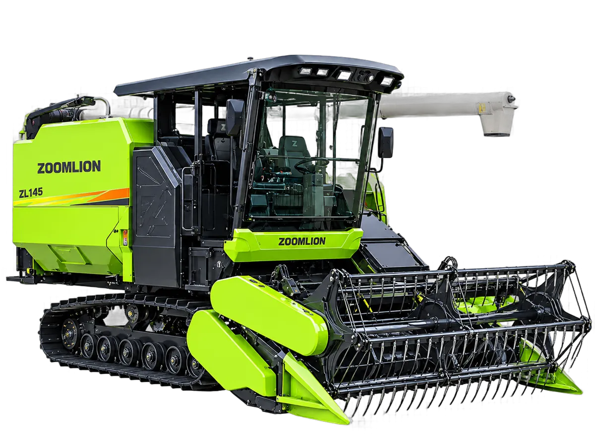

Combine Harvester
Zoomlion ZL145
Combine harvester 140 HP yang dirancang untuk operasi pemanenan di lahan berskala luas
Bandingkan dengan unit lain →Keunggulan
- Performa bertenaga: ditenagai mesin 140 HP bermerek ternama, dilengkapi HST 56 cc dan transmisi YD100 yang diperkuat untuk cadangan daya melimpah dan keluaran torsi tinggi
- Performa lapangan unggul: kecepatan jalan hingga 2,5 m/s dengan header 2,4/2,56 m menghadirkan efisiensi panen terbaik di kelasnya
- Sistem perontokan dan pembersihan berefisiensi tinggi dengan silinder perontok 2,2 m dan cleaning shoe berperforma tinggi, menekan kehilangan gabah hingga serendah 1,5%
- Manuver lincah: jarak terendah ke tanah 350 mm dan track karet 550 × 90 × 58 berlug tinggi menghadirkan tekanan tanah rendah dan mobilitas unggul di lahan berlumpur
- Keandalan tinggi: sasis yang diperkuat dan sistem track bogie memberikan distribusi beban lebih baik, dengan bearing utama PEER impor dan komponen aus dari material tahan lama
- Daya jelajah bahan bakar: tangki berkapasitas besar 210 L mendukung operasi panen penuh sehari
- Pengoperasian mudah: joystick kendali elektronik terintegrasi, auger pembongkaran terkendali listrik yang dapat berputar kiri-kanan, serta opsi fungsi auger return satu sentuhan
- Kenyamanan operator: kabin ber-AC mewah, reel hidrolik, dan header bergeser lateral hidrolik. Kecepatan reel dapat disetel tanpa jenjang menyesuaikan kecepatan panen dan kondisi tanaman
Spesifikasi
| Model | ZL145-CU |
|---|---|
| Model Mesin | YC4DK140-T302-DKD9S0 |
| Tipe Mesin | Inline, Water-Cooled, 4 Tak |
| Tenaga Mesin | 103 kW (140 PS) |
| Kapasitas Tangki BBM | 210 L |
| Dimensi | 6.180 × 2.850 × 2.870 mm |
| Berat Operasi | 4.510 kg |
| Jarak Rendah Ketanah | 350 mm |
| Lebar Gauge | 1.250 mm |
| Ukuran Crawler | 550–600 × 90 × 58 links |
| Panjang Kontak Tanah | 1.885 mm |
| Displacement HST | 56 ml/r |
| Sistem Transmisi | YD100 Heavy-Duty Transmission |
| Lebar Meja Potong | 2.360–2.800 mm |
| Diameter Reel | 900 mm |
| Jumlah Reel Bat | 5 |
| Ukuran Drum Perontok | ø620 × 2.200 mm |
| Kapasitas Hopper | 2,0 m³ |
| Kecepatan Operasi | 0–1,78 m/s |
| Kecepatan Maksimum | 0–2,58 m/s |
Tanya harga & ketersediaan unit
Tim kami siap membantu memilih unit yang sesuai kebutuhan lahan Anda.